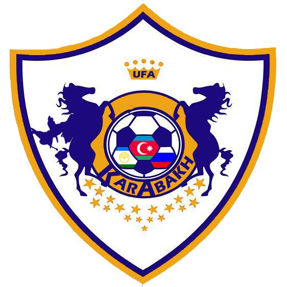

Информация о футбольной команде
Клуб был основан в начале 1950-х годов. После завершения строительства Агдамского городского стадиона в 1951 году была проведена серьезная работа по формированию клуба как профессиональной спортивной организации. «Карабах», некоторое время после основания выступавший под названием «Махсул», впервые принял участие в чемпионате Азербайджана в 1966 году. В том же году клуб завершил чемпионат на 4-м месте. «Карабах» боролся в чемпионате страны 4 года подряд. Его лучший результат за эти годы был в 1968 году, когда он финишировал вторым. Однако после 1968 года из-за запущенности команда долгое время не представлялась в чемпионатах страны. В 1977 году «Карабах» был восстановлен под названием «Шафаг». В том же году «Шафаг» выступал во 2-м дивизионе чемпионата Азербайджана. «Шафаг» до 1982 года был единственным представителем агдамского футбола. С 1982 по 1987 год клуб участвовал в соревнованиях под названием «Кооператор». «Карабах» впервые был удостоен звания чемпиона Азербайджана в 1988 году. Следует отметить, что этот чемпионат был выигран, когда Азербайджан входил в состав бывшего СССР. После этого чемпионата «Карабах» вышел во 2-й дивизион чемпионата СССР. В 1989 году «Карабах» выступал в 9-й зоне чемпионата СССР. В 1990 году, после внесения изменений в зональные соревнования 2-го дивизиона чемпионата СССР, «Карабах» был вынужден участвовать в зональных соревнованиях чемпионата Азербайджана. В 1991 году, после распада СССР, был организован независимый чемпионат Азербайджана по футболу. "Карабах" - один из немногих клубов в Азербайджане, который участвовал во всех сезонах. После оккупации Агдама армянами в 1993 году команда действовала как «клуб беженцев». Конечно, кроме этого клуб испытывал и финансовые трудности. Именно по этой причине в 1998-2001 годах он показал плохой результат в составе сильной команды национального первенства. Более того, финансовое положение привело к уходу из «Карабаха» ведущих игроков клуба. Все эти проблемы были решены в 2001 году после того, как «Азерсун», один из крупнейших холдингов, действующих в Азербайджане, спонсировал команду. Холдинговая компания «Азерсун», получившая своими добрыми делами имя не только в Азербайджане, но и во всем востоке и тюркском мире, приступила к практической работе, чтобы не забыть «Карабах». Финансовые проблемы команды были быстро решены при непосредственной личной помощи президента компании Абдулбари Кузала. В команду были возвращены бывшие игроки «Карабаха», перешедшие в другие клубы из-за невозможности. С того периода клуб назывался «Карабах-Азерсун». Конечно, уход нового спонсора не мог не сказаться на результатах команды. В 2001 году «Карабах-Азерсун» занял 9-е место в чемпионате страны, но подготовка к следующему сезону шла серьезно, и перед клубом стояла задача занять самые высокие места. Однако добиться цели не удалось, так как чемпионат 2002-2003 годов в нашей стране был приостановлен после известных событий в азербайджанском футболе. В 2003 году в структуре управления "Карабах-Азерсун" был произведен ряд изменений и вице-президентом команды был назначен Тахир Гоозал. С приходом в клуб Таира Гузала в истории «Карабаха» открылась новая страница. Были мобилизованы все возможности для успеха команды в чемпионате страны. И именно благодаря этим усилиям в сезоне 2002-2003 гг., после длительного перерыва, «Карабах» снова оказался в числе призеров чемпионата Азербайджана и завоевал бронзовые медали чемпионата. «Карабах» хотел начать сезон 2004-2005 более амбициозно. Для этого руководство назначило на должность главного тренера нашего соотечественника, опытного тренера Игоря Пономарёва, проживающего в Швеции. За короткое время в команду были привлечены ведущие футболисты страны. Большинство из них – футболисты, которые гоняют мяч в нашей сборной. Отметим еще один момент, что именно по инициативе Таира Гузала в 2004 году было возвращено себе историческое название «Карабах» и команда снова стала называться этим именем. Кроме того, г-н Тахир сделал для клуба новый логотип. В этом логотипе, изготовленном специальными дизайнерами в Англии, изображены лошади, символы «Карабаха». Они украшены различными футбольными атрибутами. Наш клуб выиграл национальный кубок в 2006 году под руководством главного тренера Буюкаги Агаева. В августе 2008 года руководство клуба выдвинуло Гурбана Гурбанова на должность главного тренера. Этот шаг руководства клуба открыл новую страницу в истории нашего «Карабаха». Гурбан Гурбанов выиграл Кубок Азербайджана в свой первый сезон. В сезонах 2009/10 и 2010/11 наша команда завершила чемпионат с бронзовыми медалями. Наша команда, завершившая следующий сезон на 4-м месте, в сезоне 2012/13 вновь завоевала бронзу. В сезоне 2013/14 закончилась наша "карабахская" тоска по чемпионству, Гурбан Гурбанов